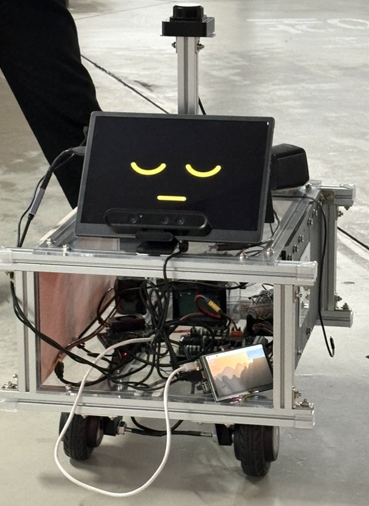

프로젝트

PARKY — 지하주차장 불법주차 단속 로봇
지하주차장을 자율 주행하며 장애인 구역과 소방 구역의 불법주차 차량을 찾아내는 로봇입니다.
- 주행: 어떤 방식으로 주차장을 순회했는지 (SLAM, 웨이포인트 등)
- 인식: 번호판·구역 판별을 어떻게 처리했는지
- 가장 어려웠던 문제 하나와 그걸 어떻게 풀었는지
메가북스 — 아이트래킹 기반 4D 독서
독자의 시선을 추적해 지금 읽고 있는 대목에 맞춰 효과를 재생하는 독서 시스템입니다.
- 시선 추적: 어떤 장비와 방식으로 응시 지점을 잡았는지
- 본문 매핑: 시선 좌표를 문장/문단 단위로 연결한 방법
- 4D 효과: 무엇을 어떻게 연동했는지 (조명, 진동, 음향 등)

청각장애인을 위한 헤드셋형 보조기기
주변 소리를 감지해 착용자가 알아챌 수 있는 형태로 바꿔 전달하는 헤드셋형 기기입니다.
- 감지: 어떤 소리를 대상으로 했고 어떻게 분류했는지
- 전달: 방향과 종류를 어떤 방식으로 알렸는지 (진동, 시각 표시 등)
- 착용성: 하드웨어를 어떻게 설계했는지